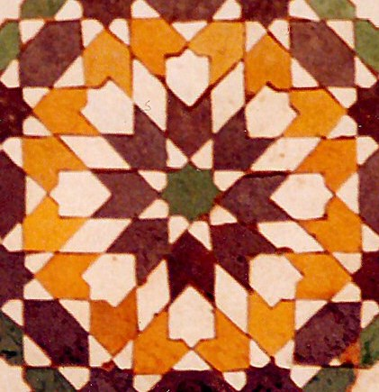
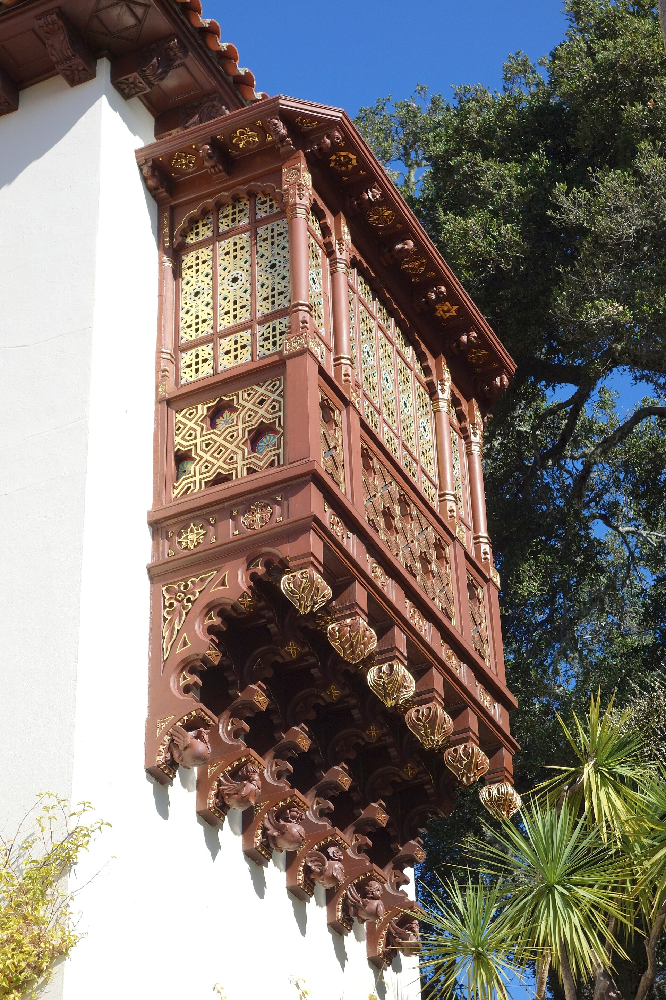
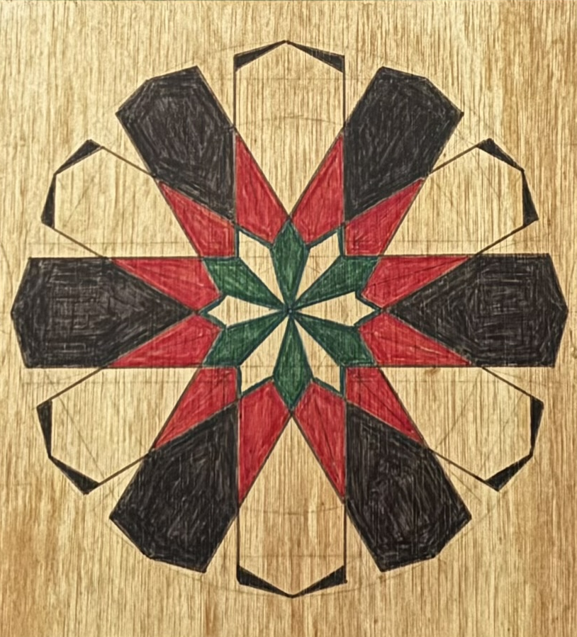
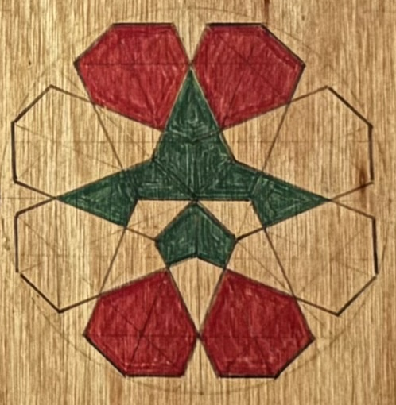
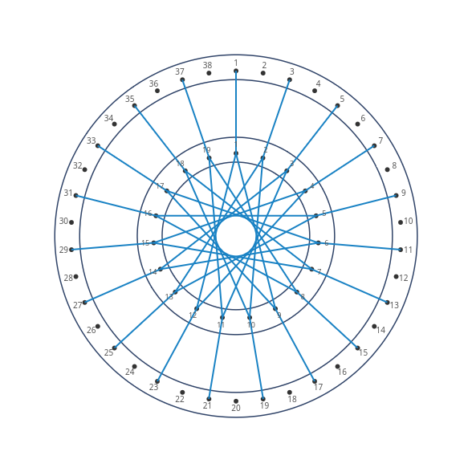
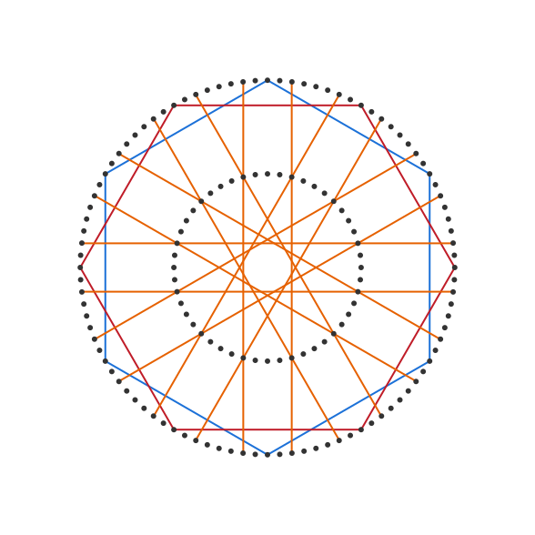

Some patterns are more easily drawn than stitched. Such is the case especially of the rosette, a pattern named for the flower-like shape of petals and center which it creates:

Rosettes are commonly seen throughout Islamic art and architecture (such as mashrabiya screens):

For Muslims, these designs are considered to be artistic expressions of great beauty, due to a particular balance that they strike They avoid vying with the art of the creator via representation, yet evoke the glory of the one who created the laws by which such beauty might be attained. The varying rosettes can be categorized by the count of their petals, such as the "12 fold", with its 12 petals:

Or the eight fold with its eight:

There are many others, but in most if not all such cases the designs are primarily created by drawing, and therefore follow a different, more flexible set of constraints than one would have when using a stitching frame, sewing card, or indeed any set of materials in which the positioning of lines' endpoints is limited to those which overlap with discrete points, such as holes, along shape boundaries.
This challenge of continuous shape construction within discrete constraints is brought into particular relief when one tries to stitch the correctly shaped petals from an inner circle, as the holes or points created along its perimeter do not generally afford a zero-degree change between inner and outer line segments.

The challenge, then, of constructing a traditional rosette via stitching arises from attempting to create a structure whose design is based on continuous shape boundaries (drawn via compass and straight edge), using a discrete construction paradigm (a non-infinite, explicitly defined series of holes or points).
The irony is that the computer, despite being based on discrete mathematics, and despite simulating a discrete construction paradigm such as stitching, does not truly suffer the physical limitations of stitching frames or of Mary Boole's sewing cards.
A virtual 2D plane, unlike such objects, can be created as well on a screen as it can on paper, and thus we are able to construct lines whose endpoints may not connect to holes on the outer frame, provided they do intersect with such points on the inner frame.

We call these threads to be stitched in "inner->outer" projection mode.
In real life, were one to foolishly attempt to create such a rosette by stitching threads, rather than taking the far easier approach of beginning by drawing, one would still have to resort to mixed media, as the inner frame points could anchor thread intersections of that frame, but the segments between those intersections and the desired line endpoints on the outer frame would have to be drawn, painted or otherwise marked, in a manner not requiring the existence of overlapping discrete points or holes along the outer frame.